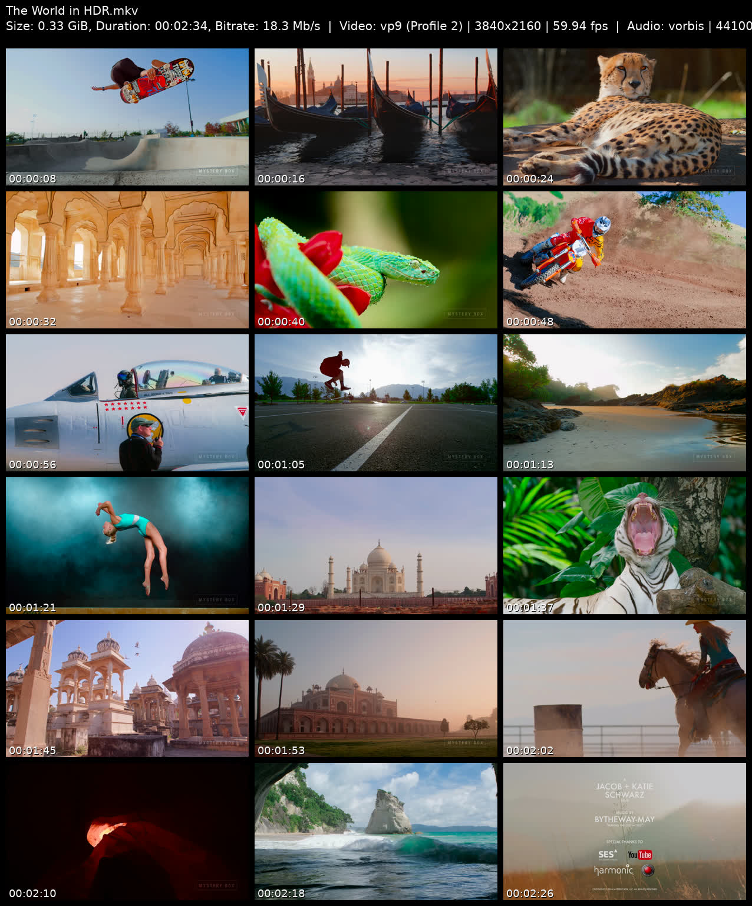
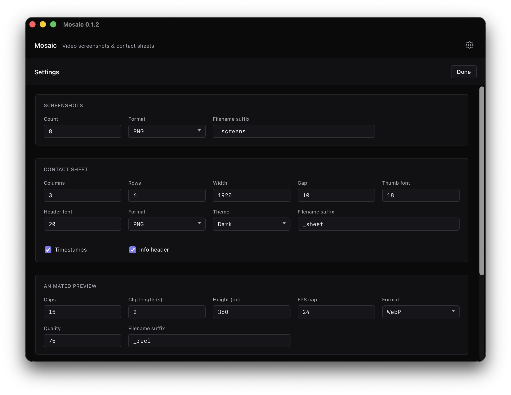

mosaic manual
Install in under a minute, skim the output types, then batch. FAQ at the bottom covers the common friction points — ffmpeg, Gatekeeper, SmartScreen, and the rest.
Install
Pick the package for your platform. All builds live on the GitHub releases page.
macOS — universal
- Download
Mosaic_universal.dmg. - Open the DMG, drag Mosaic to Applications.
- Launch from Applications or Spotlight.
Works natively on both Apple Silicon and Intel.
Windows — x64 or ARM64
- Download one of:
Mosaic_x64-setup.exe— recommended, smaller installerMosaic_x64_en-US.msi— MSI for enterprise / deployment toolsMosaic_arm64-setup.exe— for Snapdragon / ARM devices
- Run the installer.
Linux — x64
Three package formats — pick whichever suits your distro:
- AppImage — portable, works on most distros:
chmod +x Mosaic_*_amd64.AppImage ./Mosaic_*_amd64.AppImage - .deb — Debian / Ubuntu / Mint:
sudo dpkg -i Mosaic_*_amd64.deb - .rpm — Fedora / RHEL / openSUSE:
sudo rpm -i Mosaic-*.x86_64.rpm
Requirements
Mosaic shells out to two external CLIs, both required: ffmpeg (with ffprobe) for extraction and tonemapping, and MediaInfo for richer header metadata (HDR format, commercial audio codec name, channel layout, language) and the per-file metadata viewer (see below). All three binaries — ffmpeg, ffprobe, mediainfo — must be on your PATH.
macOS
brew install ffmpeg-full mediainfoThe default brew install ffmpeg bottle omits libfreetype and libzimg — required for text overlays and HDR tonemapping. ffmpeg-full has both; Mosaic automatically prefers it when installed.
Windows
winget install Gyan.FFmpeg MediaArea.MediaInfo.CLIOr via Chocolatey: choco install ffmpeg-full mediainfo-cli.
Linux
sudo apt install ffmpeg mediainfo # Debian / Ubuntu
sudo dnf install ffmpeg mediainfo # Fedora
sudo pacman -S ffmpeg mediainfo # ArchMost distro packages already ship ffmpeg with libfreetype and libzimg enabled.
First run
- Drop videos. Drag files onto the window or click Add Files / Add Folder. Folders scan recursively.
- Pick output types. Check one or more: Screenshots, Contact Sheet, Animated Preview, Animated Contact Sheet.
- Choose output location. Either next to each source file or a single custom folder.
- Click Generate. Watch progress per file; cancel any time.

Output types
Contact sheets
A grid of timestamped frames sampled evenly across the video's duration. Best for archival indexes, dailies review, or quick "what's in this file" catalogs.
Options: rows × columns, format (PNG / JPEG), JPEG quality, width, optional header with filename + metadata, timestamp overlay, font.

Screenshots
Individual frames extracted at evenly-spaced timestamps, configurable count. Each file named after the source video with an index suffix.
Options: count, format (PNG / JPEG), JPEG quality, suffix.
Animated previews
Two flavors of motion preview, sharing the same underlying clip extractor:
- Reel — short clips stitched end-to-end into a single WebP, WebM, or GIF. Motion preview without full playback.
- Animated grid — a contact-sheet grid where every cell loops a short motion clip. All clips visible at once. WebP only.
Options: clip count, clip length, framerate, output dimensions, quality, format (WebP / WebM / GIF for reel; WebP for grid).
Settings
Click the gear icon in the header to configure defaults. Settings persist across launches.

Each output type has its own section with its own knobs — quality, dimensions, suffix for generated filenames, font choice for overlays, header fields, and format-specific encoding parameters. Theme follows your system preference automatically.
MediaInfo viewer
Every queue row has a small info icon next to the filename. Click it to open a modal showing the raw mediainfo output for that file — video codec, bitrate, HDR profile, audio tracks, container metadata, everything MediaInfo knows.
There's a copy-to-clipboard button for pasting into issue reports, forum threads, or metadata logs.
MediaInfo is a required prerequisite — if it's missing at startup, Mosaic shows the same "required tools not found" state it does for ffmpeg. See Requirements for install commands.
Auto-update
Every time you launch Mosaic (v0.1.2 or later), it silently checks GitHub for a newer release. If one exists, a native dialog appears:
Click Install and Mosaic downloads the new version, verifies its cryptographic signature against the embedded public key, installs, and relaunches. No manual download, no re-install.
Update checks never send anything about your videos — only an unauthenticated HTTP request for the release metadata.
v0.1.1 and earlier: those versions predate the auto-updater — you'll need to download v0.1.2+ manually once. From then on, updates flow automatically.
FAQ
Do I really need ffmpeg separately? Why isn't it bundled?
Bundling ffmpeg triples the installer size and locks you into whatever build options we picked. We recommend ffmpeg-full (which ships with libfreetype + libzimg for drawtext and HDR tonemapping). Keeping ffmpeg external lets you upgrade it independently.
The app checks for ffmpeg and ffprobe on your PATH at startup. If either is missing, you'll see install instructions and a Retry button.
macOS says "Apple could not verify Mosaic is free of malware"
From v0.1.2 onward, macOS builds are Developer-ID signed and notarized. You should not see this warning. If you do on a very recent macOS:
- Make sure you're on v0.1.2 or later (check the window title — it shows the version).
- Right-click the app once → Open. Subsequent launches are fine.
- If the issue persists, file an issue — this shouldn't happen.
Windows SmartScreen blocks the installer
Windows builds aren't code-signed yet (EV certificates are expensive). SmartScreen warns until enough users download and confirm the file is safe.
Click More info → Run anyway. Source is open on GitHub, releases are built by GitHub Actions from tagged commits — you can verify the build chain.
Where are my output files saved?
Two choices in the output row at the bottom of the app:
- Next to source — outputs land in the same folder as each video, with a suffix (e.g.
myvideo_sheet.jpg). Best for processing a single folder in place. - Custom folder — all outputs go into one folder you pick. Best for batch runs across multiple source folders.
Filenames follow {sourcename}{suffix}.{ext}. Collisions get a (1), (2) numeric suffix so nothing is overwritten.
How does the auto-update work? When is it checked?
Once on every app launch. See the Auto-update section above for the full flow. Zero telemetry — the only request is a fetch of the public latest.json from this GitHub repo.
Can I cancel a job mid-way?
Yes. Click Cancel in the action bar. The currently-running ffmpeg process is killed; files already completed are kept, in-flight files are cleaned up.
My HDR video produces weird colors — what version of ffmpeg do I need?
HDR tonemapping (HDR10, HLG) requires ffmpeg built with libzimg (the zscale filter). Default Homebrew ffmpeg on macOS lacks it — install ffmpeg-full instead:
brew install ffmpeg-fullMosaic prefers ffmpeg-full automatically when present. For Dolby Vision Profile 5, a built-in IPT-PQ-C2 → BT.709 color correction runs regardless of ffmpeg build — no zscale required.
Do I need to install MediaInfo too?
Yes. Mosaic uses MediaInfo both to build richer contact-sheet headers (HDR format, commercial audio codec name, channel layout, language) and to power the per-file metadata viewer. Mosaic checks for mediainfo on your PATH at startup and shows the same "required tools not found" message as it does for missing ffmpeg.
Installation is a one-liner per platform — see the Requirements section above.
Which video formats are supported?
45 container types — anything ffmpeg can decode. This includes common formats (MP4, MKV, MOV, AVI, WebM, M4V), broadcast (MXF, R3D), transport streams (TS, M2TS), camcorder formats (DV, WTV), and legacy containers. If ffmpeg can probe it, Mosaic can process it.
How big are the output files?
Depends on output type and settings:
- Contact sheets: 200 KB – 5 MB (JPEG 80–95% quality, 1920×wide).
- Screenshots: 50 KB – 2 MB each at full width.
- Animated previews (WebP): 500 KB – 10 MB for a few seconds of motion.
- Animated contact sheets: 1 – 20 MB depending on grid size and clip length.
All dimensions and quality are configurable in settings.
Does Mosaic upload my videos anywhere?
No. Everything happens locally via ffmpeg. The only network activity is the auto-update check — a single GET to GitHub's public releases API. No analytics, no telemetry, no cloud component, no account.